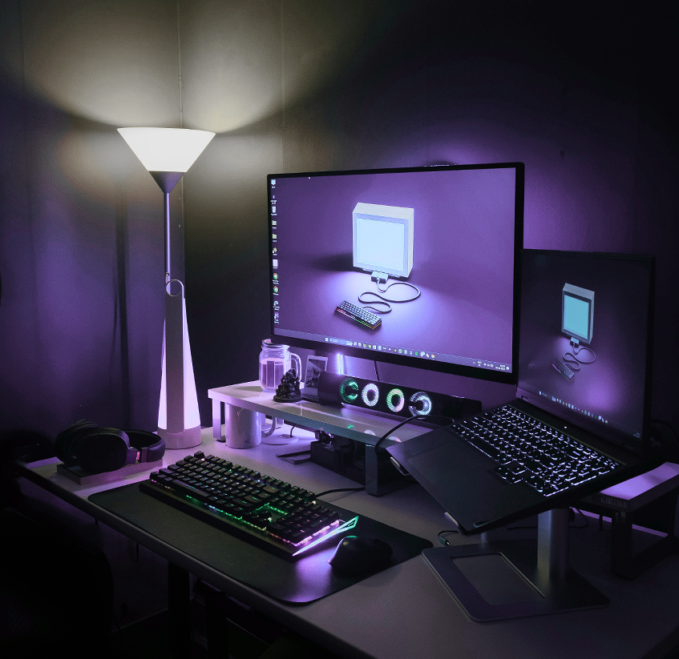
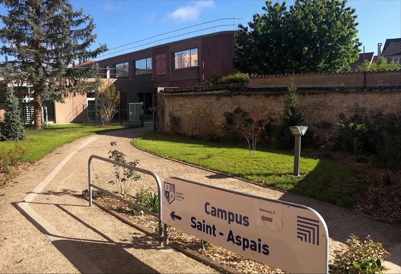
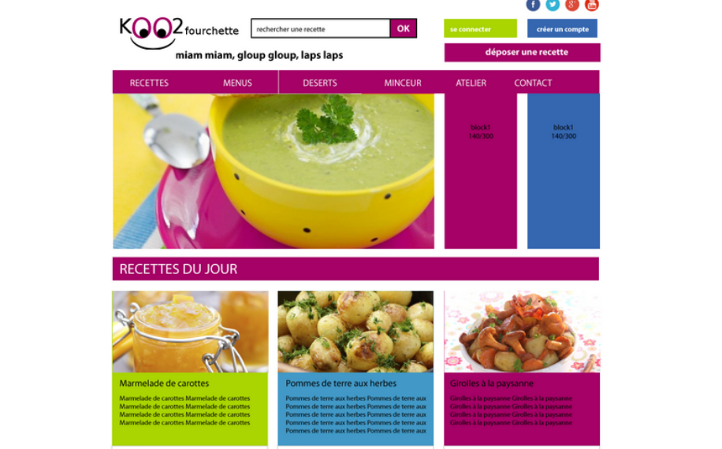
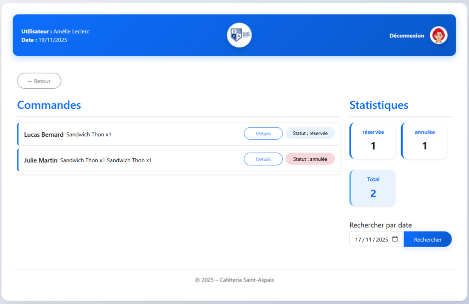

Alicia Courtois
Étudiante en BTS SIO (Services Informatiques aux Organisations), option SLAM (Solutions Logicielles et Applications Métiers), orientée développement web.

Bienvenue sur mon Portfolio
MON PROFIL
QUI SUIS JE ?
Actuellement étudiante en deuxième année de BTS Services informatiques aux Organisations (SIO) avec l’option Solutions Logicielles et Applications Métiers (SLAM) . J’ai acquis de nombreuses compétences en développement front-end et back-end, ce qui me permet de me spécialiser dans le développement fullstack.
Sérieuse et motivée, je souhaite poursuivre mes études en licence informatique afin de découvrir différents domaines du développement, et si possible, suivre une mineure en jeux vidéo. Mon objectif est ensuite d’intégrer un master dans le domaine qui me sera le plus adapté avant de finaliser mon parcours par une formation en design se qui me permettrait d’élargir mes compétences et de me préparer au monde professionnel.
Activités : jeux vidéos, dessin, crochet, lecture.
CURRICULUM VITAE
MES COMPETENCES
 HTML/CSS
HTML/CSS- Structuration sémantique des pages HTML
- Conception de maquettes web
- Mise en page Responsive (Flexbox et Grid)
- Création d’interfaces ergonomiques et claires
 PHP
PHP- Création de pages web dynamiques
- Mise en place d’un CRUD
- Gestion des sessions et authentification des utilisateurs
- Gestion des formulaires
 JSON
JSON- Lecture et écriture de fichiers JSON
- Traitement des données
- Conception de Bases de données
- Création et gestion des tables
- Requêtes SQL
- Liaison base de données / site web
- Utilisation du modèle Modèle Vue Contrôleurs (MVC)
- Organisation et structuration du code
 Linux
Linux- Utilisation d’un système Linux sur une machine virtuelle
- Commande de base Linux
- Installation et configuration de services simple (Apache, MySQL)
- Gestion de versions
- Création de dépôts
- Gestion des sauvegardes
- Travail en groupe
 Python
Python- Programmation algorithmique
- Manipulation de variables, boucles, conditions
- Résolution de problèmes
COMPETENCES COMPLEMENTAIRES
- Travail en équipe
- Autonomie
- Organisation et Gestion du temps
- Capacités d’adaptation
OUTILS
- Visual Studio Code et VSCodium
- Git Github
- phpMyAdmin
- MySQL / MariaDB
- Clip Studio Paint et Procreate
- VirtualBox
CERTIFICATIONS
- MOOC de l'ANSSI - SecNumacadémie
- PIX - Certification de compétences numériques
MON PARCOURS
BTS SIO
Option SLAM - Solutions Logicielles et Applications Métiers
2023 - 2025 - Campus Saint-aspais, Melun
En savoir plus sur le BTS
BAC GÉNÉRAL
Spécialité : Mathématiques, Science de la Vie et de la Terre, SES en 1ère.
2021 - 2024 - Lycée Pierre Mandes France, Savigny-le-Temple
MES STAGES
Afin de valider mon BTS, j'ai du faire un stage tout les ans en informatique, plus précisément en développement web afin d'acquérir une expérience professionnelle durant ma formation.
STAGE 1
Date : du 20/05/2025 au 04/07/2025
Entreprise : Lïlo et Site
Objectif : crée un site de e-commerce pour une boutique de bijoux fait mains à partir d’une base d’un site
Technologies utilisées : HTML/CSS, Java Script, ReactJS et NodeJS, AWS, PostreSQL, WSL, Github
Mes Missions :
- Modification des seeds (produit, matériaux, catégories)
- Adaptation des tests automatisé
- Modification du frontend (images, couleurs, structures)
- Analyse et résolution d'erreurs
STAGE 2
Date : du 05/01/2026 au 06/02/2026
Entreprise : NIAK NIAK KADRIC
Objectif : crée un site de e-commerce pour la vente de plante carnivore avec un autre stagiaire en partant de rien
Technologies utilisées : HTML/CSS, PHP, phpMyAdmin, Github
Mes Missions :
- Rédaction d'un cahier des charges
- Création d’une base de données MySQL
- Création de maquettes de Site Web
- Intégration de maquettes en HTML/CSS (structures, design, Responsive)
- Mise en place de la méthode MVC
- Gestion des utilisateurs et authentification
Mes Projets
Projet Koo2fourchette
Création d’un site de recettes en ligne fait à partir d'une maquette donnée.
Technologies utilisées : HTML/CSS, PHP, Debian sur Virtualbox
Missions :
- Intégration de maquettes en HTML/CSS
- Création d’un CRUD en PHP/MySQL
- Gestion des utilisateurs et authentification

Projet Cafétéria
Création d’un site permettant la reservation de repas pour les étudiants et gestion des commandes et du stock pour la gestionnaire de notre cafétéria.
Technologies utilisées : HTML/CSS, PHP, Boostrap, phpMyAdmin
Missions :
- Création et intégration de maquettes en HTML/CSS
- Utilisation de la méthode MVC
- Création d’un CRUD en PHP/MySQL
- Gestion des utilisateurs et authentification

En cours
Projet Symfonie
Création d’un site de gestion d'un club de e-sport.
Technologies utilisées : HTML, CSS, symfony, debian sur virtualbox, easyadmin
Missions :
- Installation du serveur sur debian avec easyadmin
- Création d’un CRUD en Symfony
A venir
Projet 4
Création d’un site de gestion des repas et de préparation de liste de courses
Technologies utilisées : HTML, CSS, PHP, MySQL
Mes coordonnées


Mes réseaux

 Alicia Courtois
Alicia Courtois